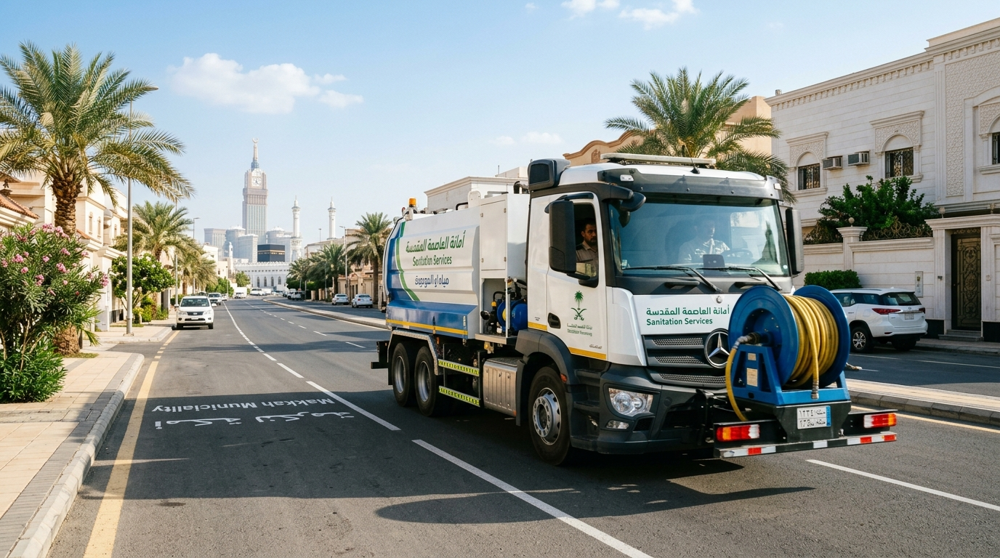
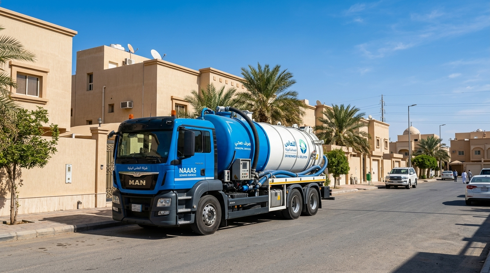
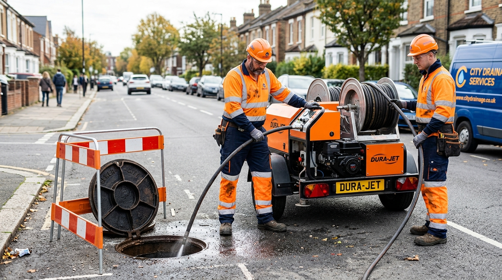
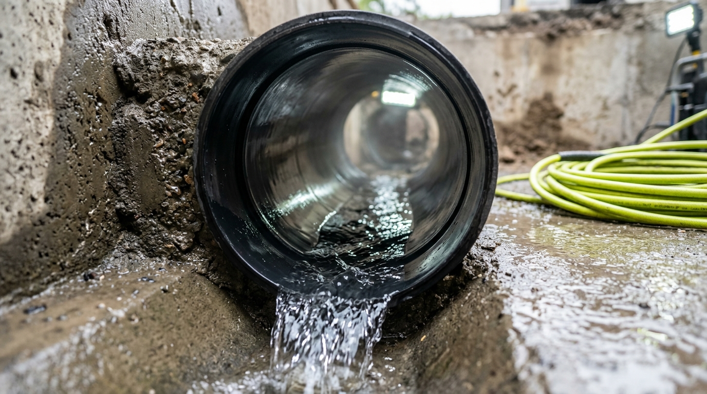

وايت صرف صحي بمكة المكرمة | شفط بيارات وتسليك مجاري 24 ساعة
نوفر وايت صرف صحي ووايت شفط بيارات ومجاري في مكة المكرمة والشرائع، مع تسليك وفك سدد وتنظيف البيارات بسرعة وجودة عالية. شاهد أعمالنا الميدانية واطلب الخدمة مباشرة.

وايت صرف صحي وحلول متكاملة لمشاكل الصرف بمكة
نعتمد على أفضل المعدات والتريلات المجهزة لضمان إنهاء الأعمال بكفاءة وسرعة فائقة.

وايت صرف صحي وشفط البيارات
نقدم خدمة وايت صرف صحي وشفط البيارات باستخدام وايتات وتريلات متطورة لإزالة المياه والرواسب والمواد العالقة بسرعة وأمان.
فك السدد
نقدم حلولاً فعالة لفك السدد في أنظمة الصرف الصحي، مما يضمن سلاسة تدفق المياه ويقلل من المخاطر الصحية.

تنظيف البيارات
هل تحتاج إلى تنظيف البيارات؟ نحن هنا لتقديم الخدمة بأفضل الطرق المتاحة لضمان نظافة النظام.
وايت صرف صحي يغطي أحياء مكة المكرمة بسرعة
نوفر وايت صرف صحي ووايت شفط بمكة على مدار 24 ساعة، ونغطي الشرائع والعزيزية والشوقية والعوالي وبقية الأحياء للوصول إلى موقعك بسرعة.
مخطط ولي العهد
تريلات شفط ذات سعة كبيرة للمخططات السكنية والإنشائية بولي العهد.
طلب تريلة بولي العهدصور وفيديوهات تنفيذ الأعمال الميدانية
معرض حي لعمليات الشفط والتسليك وغسيل الشبكات التي نصل بها لأعلى معايير النظافة والسرعة.

شاهد الفرق قبل وبعد التنظيف وفك السدد
اسحب الشريط التفاعلي لرؤية التحول الكامل في نظافة وتدفق شبكات البيارات قبل وبعد تدخل فنيينا.
لماذا نحن خيارك الأول في مكة والشرائع؟
نوفر لك أقصى سرعة استجابة مع ضمان جودة الأداء وعدم التكسير بأحدث المعدات.
استجابة سريعة
نصلك في أسرع وقت بمجرد اتصالك بنا في أي مكان بمكة والشرائع.
أحدث التريلات والوايتات
أسطول من التريلات الحديثة ذات السعة الكبيرة والمزودة بمضخات عالية القوة.
خبرة وكفاءة
طاقم عمل محترف ومتخصص في التعامل مع أصعب حالات السدد والطفح.
أسعار منافسة
أفضل أسعار الشفط والتنظيف مع ضمان جودة العمل واستمرارية النتائج.
تقييمات عملائنا في أحياء مكة المكرمة
نفتخر بتقديم أفضل خدمات الصرف والشفط بمهنية وسرعة عالية حازت على ثقة مئات الملاك والعمائر.
أبو فهد العتيبي
حي الشرائع - مكة المكرمة"طلبنا وايت شفط بيارة في الشرائع، ووصل خلال 25 دقيقة بالضبط. سحب قاع البيارة بالكامل والخدمة نظيفة وسريعة."
أبو أحمد الزهراني
حي الشوقية - مكة المكرمة"كان عندنا انسداد صعب ببالوعة المطبخ، الفني استخدم كمبروسر الضغط العالي وفك السدد بسرعة وبدون أي تكسير بالسيراميك."
مهندس خالد القرشي
حي العزيزية - مكة المكرمة"نتعامل معهم بعقود صيانة عمائر سكنية وفنادق بالعزيزية. التزام بالوقت وأسعارهم ممتازة جداً ومنافسة."
تواصل معنا اليوم
يسعدنا الرد على استفساراتكم وتقديم المساعدة اللازمة.
العنوان
الشرائع مكة المكرمة
أوقات العمل
جميع ايام الاسبوع
الهاتف
البريد الإلكتروني
أسئلة شائعة عن الوايت والصرف الصحي في مكة
إجابات مباشرة على أكثر الاستفسارات شيوعاً بشأن الأسعار، سرعة الوصول، وطريقة تسليك البيارات.
تختلف تكلفة وايت صرف صحي أو شفط البيارة في مكة حسب حجم البيارة وكمية المياه والرواسب ونوع الوايت المطلوب. نوضح السعر قبل بدء العمل ونوفر وصولاً سريعاً في مكة والشرائع. اتصل بنا: 0533255939
نعم، نوفر وايت صرف صحي ووايت شفط بيارات ومجاري في مكة المكرمة والشرائع على مدار 24 ساعة، مع إمكانية طلب الخدمة بالاتصال أو الواتساب وتحديد الموقع الجغرافي للفني.
نمتلك أسطولاً كبيراً ومتوزعاً من وايتات وتريلات الشفط في مختلف أحياء مكة المكرمة مثل الشرائع، العزيزية، والشوقية. نصل إلى موقعك في غضون 20 إلى 40 دقيقة فقط من طلب الخدمة.
نعم، خدمات الصرف الصحي وشفط البيارات وفك السدد متوفرة لدينا على مدار 24 ساعة طوال أيام الأسبوع، بما في ذلك أيام العطلات والإجازات للتعامل مع حالات طفح البيارات والانسدادات الطارئة.
نستخدم تقنيات حديثة تشمل كمبروسر الضغط العالي وأجهزة ضغط المكونات والأسياخ الحلزونية المتقدمة لتفتيت الدهون والترسبات الصلبة داخل المواسير وإزالتها تماماً بدون الحاجة إلى أي تكسير في السيراميك أو الجدران.
نغطي كافة أحياء مكة المكرمة بما فيها الشرائع، العزيزية، الشوقية، العوالي، النوارية، ولي العهد، بحرة، الرصيفة، بطحاء قريش، الكعكية، المسفلة، العتيبية، الزاهر، العمرة، والنزهة.